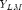
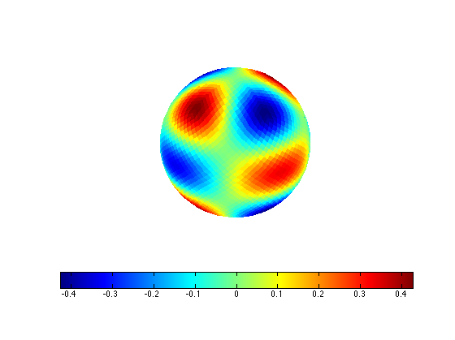

ylm
Evaluate spherical harmonic basis functions  at pixel centers
Contents
Syntax
v = ylm(nSide,L,M,'Param1',Value1,'Param2',Value2,...);
Input Arguments
nSide HEALPix resolution parameter (power of 2) L spherical harmonic degree (0 <= L) M spherical harmonic order (-M <= L <= M)
Param Value
'real' return real values (true | {false})
'nest' nested indexing flag (true | {false})Return Arguments
v spherical harmonics evaluated at pixel centers
Example
Plot Ylm for (L,M) = (4,2) on nSide = 16 HEALPix sphere
pix = ylm(16,4,2); hp3d(pix);
Requires
pix2ang
Copyright 2010-2011 Lee Samuel Finn. Terms of Use.